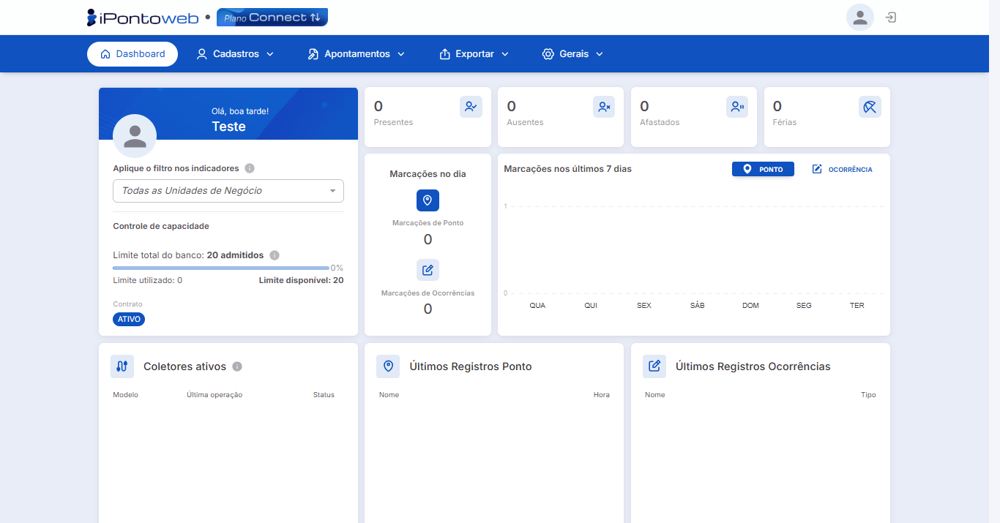

Login na Plataforma
Aplicação
Através desse processo, o usuário acessa a interface do iPonto Web utilizando os dados de acesso inseridos durante o processo de registro, para ter acesso às principais funcionalidades oferecidas pela plataforma.
Requisitos
Para logar no sistema, o usuário deve ter:
- Realizado o processo de registro.
- O e-mail e a senha usados durante o processo de registro.
Execução
- Acesse a página de login do iPonto Web Clicando Aqui.
Interface de Acesso do Sistema - Tela de Login
{kind=link}
- No formulário exibido na tela, insira o e-mail e a senha utilzados durante o processo de registro da conta, e então clique no botão "Acessar" para continuar com o processo de login.
Interface de Acesso do Sistema - Tela de Login Com Dados Preenchidos
{kind=link}
Informação
Caso você tenha esquecido a sua senha de acesso, não se preocupe, você pode recuperá-la de forma rápida e fácil. Consulte o Passo a Passo Clicando Aqui!
- Após clicar em "Acessar", o sistema processará suas informações, e se tudo estiver correto, você será redirecionado automaticamente para a tela inicial da plataforma, finalizando assim, o processo de login.

Interface Principal do Sistema - Dashboard
{kind=link}